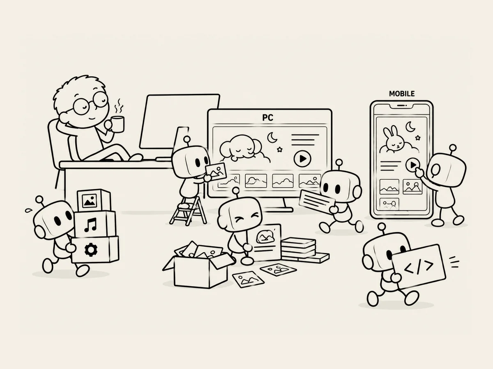

24.
司令官も知らないところで、現場はちゃんと動いていた。
2つ目のウェブサイトを作るとき、
僕は主に
パソコンで確認していた。
画面がどう見えるか確認して、
ボタンの位置を変えて、
画像を確認した。
ある程度できたところで、
スマホでも
開いてみた。
サイトが表示された。
あれ？
なかなかいい。
画面の大きさに合わせて、
ちゃんと整っている。
ボタンも入っているし、
画像も
けっこうきれいに見える。
僕はずっと、
PCの画面を中心に
作業しているつもりだった。
でも、
作っている途中で
スマホの画面のことも
ちゃんと考えられていた。
もちろん、
完璧ではない。
あとになって、
スマホでだけ起きる問題も
いくつか見つかった。
僕は司令官みたいに、
パソコンで見えることだけを
あれこれ指示していた。
でも現場では、
僕が一つひとつ見ていないところでも、
仕事が進んでいた。
そういえば、
ChatGPTが修正の指示を作るとき、
スマホではどう見えるべきか、
いろいろ指示を入れていたのを
ちらっと見た気がする。
ChatGPTとCodexが
どうやって作っているのか、
僕が全部知る必要はなかった。
結果を見て、
問題があれば
また直してもらえばいい。
司令官が、
すべての現場で
何をしているのかまで
知る必要があるのか？
大きな方向を決めて、
結果を確認すれば
いいんじゃないか？
いつの間にか、
自分の知らないところで
仕事が進んでいくことにも、
少しずつ慣れてきていた。
